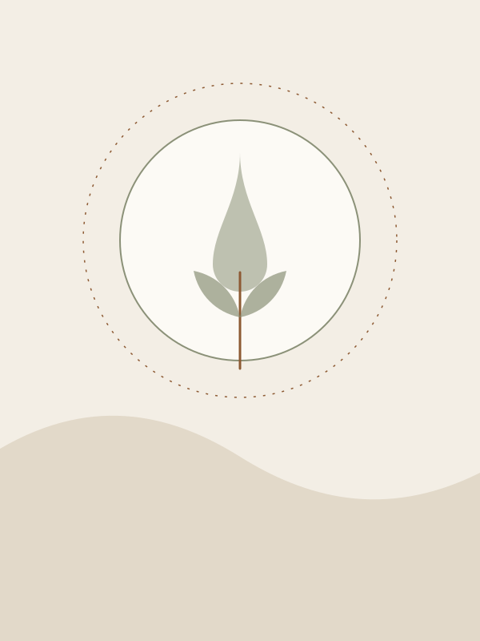
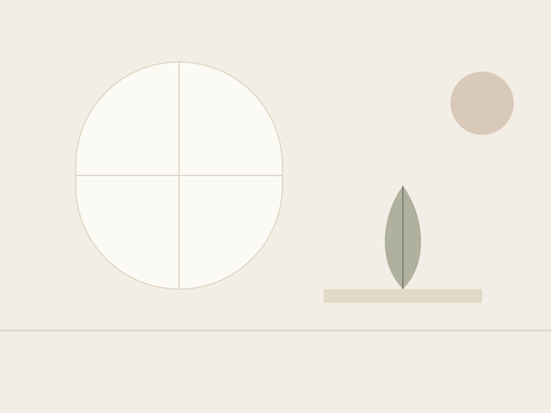

About the practice
A quiet room, and someone paying attention
Wildlight Wellness is a one-person practice. That is deliberate.
There is no intake team, no waiting list algorithm and no package you have to commit to before you have met me. You write, we talk, and we decide together whether this is worth your time.

The story
I came to this work the long way round
For eleven years I worked in rooms where the answer to exhaustion was a better system. I got very good at systems. What I could not do was explain why my hands shook on Sunday evenings, or why the word fine had quietly replaced every other adjective I owned.
What eventually helped was not a framework. It was an unhurried hour a week with someone who did not flinch, and a slow re-acquaintance with a body I had been treating as luggage. Wildlight Wellness is my attempt to keep offering that hour to other people.
I trained in somatic practice and grief work, and I keep training — because the day this stops feeling like a craft is the day it stops being useful to anyone.
See the ways we can work
Philosophy
Healing is not a performance
You are not a project to be completed by spring.
A lot of wellness culture asks you to be relentlessly optimistic about your own recovery. I find that exhausting, and mostly counterproductive. Grief takes as long as it takes. Anger is usually pointing at something accurate. Numbness kept you upright once and deserves some respect on its way out.
So the work here is less about transformation and more about contact — with what you actually feel, at a pace your nervous system agrees to. Progress often looks unglamorous: sleeping through the night, saying no on a Tuesday, crying about the right thing at last.
In their words
What people say afterwards
The quotes and names below are invented placeholders for a fictional practice. Replace them with real, consented client feedback before this site goes anywhere near the public.
I spent the first two sessions apologising for taking up the hour. By the sixth I was using all of it, and it turned out I had quite a lot to say.
Nothing dramatic happened. I just stopped waking at four in the morning with my jaw clenched, and then noticed I had stopped.
The thing I valued most was never being rushed toward a breakthrough. It made the actual one, when it came, feel like mine.
If this sounds like your kind of quiet
Come and see whether the room fits
A first conversation costs nothing and commits you to nothing. Bring the version of yourself you have on the day.